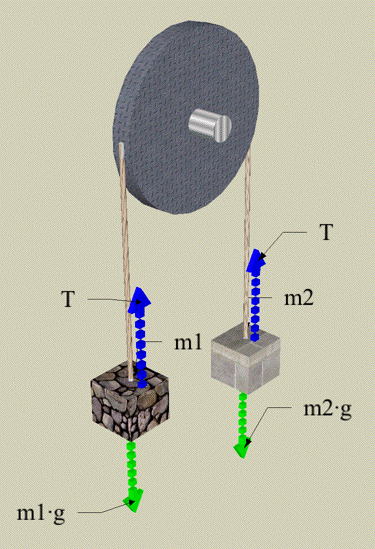

|
Here we describe how to use the ti89 to solve the Atwoods Engine problem. There are a variety of ways you can use the calculator to solve this problem. We are going to use this simple problem to illustrate how to use the algebraic solving tools built in to the calculator. As with all problems you have to begin by setting up the free body diagram. This principal step helps define the variables and the directions associated with the vectors. Remember that the idea is to determine the modelling equations associated with two masses hanging over a massless pulley with negligible friction. We assume that the masses are known and the project is to determine how the acceleration and tension depend on these values. Given the diagram at the right we can set up the equations by assuming the rotation of the pulley in a counterclockwise sense represents a positive direction. The following is a synopsis of the short video that is running below. I have deliberately sped up the video so you can watch all the steps in about 2 minutes. At any time you can pause and step through each phase of the process to see what was entered. Finally, remember this problem is intentionally chosen because it is actually easier to solve on paper than it is in the calculator. The point is to illustrate the process so you can follow along easily. |
 | |
|
||
|
Enter the two equations into the calculator, one at a time. Don't worry if the calculator turns the upper case letters into lower case letters. The calculator doesn't distinguish case (important reminder for those of you who program). Use the ability of the calculator to select the lines you entered to add the two equations together. It is important to encase each equation in parenthesis or you will generate a syntax error. The result is automatically simplified and the tension subtracts away. All that remains is to divide both sides by the quantity in front of the acceleration and we have our answer. The next step is to solve for the tension. Again I am deliberately avoiding the use of the " Simply delete the "=a" at the tail end of the expression and place "a=" at the front of it as it shows in the video. Once the substitution is complete all we need to isolate the tension term and simpify the resulting expression. There are a couple of ways to do this but "factor" seems to do the job just fine. |